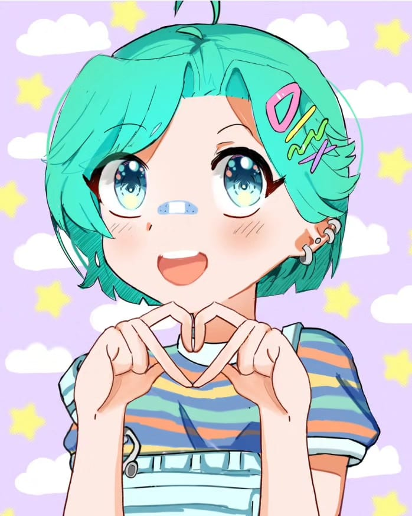
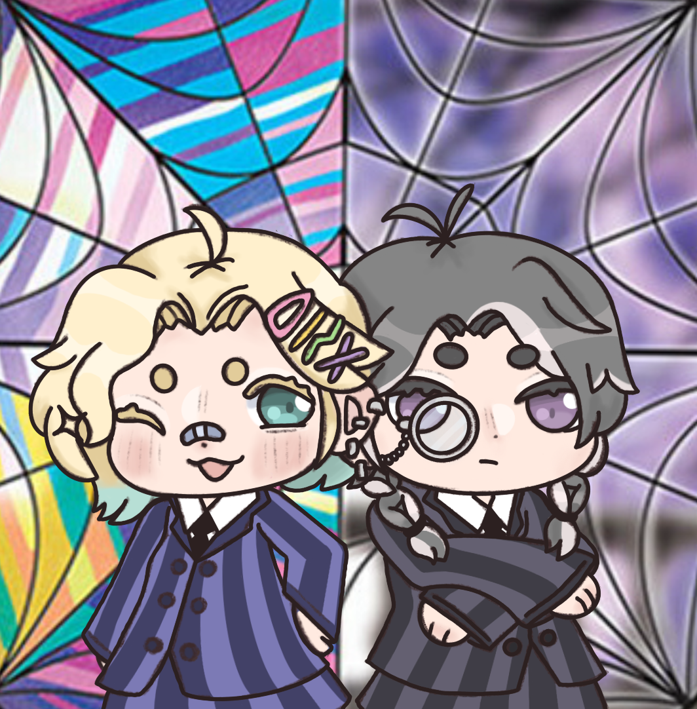

Historia da House
Tudo começou em agosto de 2022, quando eu disse aos meus seguidores do TikTok que iria dar um tempo no Age Regression, porque deixei me convencerem que o Agere estava me impedindo de amadurecer e crescer mentalmente. Em novembro desse mesmo ano, um amigo que se denominava Yuyu na época, puxou a minha orelha e disse: “Jake, vamos criar uma house de agere!”, eu rejeitei a ideia na primeira vez, mas depois de muito conversar com uma amiga chamada Manoela que na comunidade era titia e com meus seguidores (a gente tinha um grupinho no whats na época), cheguei à conclusão de que o Agere não era o que estava me atrapalhando, mas sim ajudando com meus piores momentos. O Age Regression não era o vilão aqui e sim o preconceito... no começo de dezembro, depois de ficar empolgado com a ideia de criar uma house, chamei o Yuyu e a Manoela para fazermos isso juntos e assim nasceu, dia 14 de dezembro, a Titia Anya, nossa mascote da house, batizada de Anya Hope Brasil. Perceba que as iniciais de cada nome da mascote são as iniciais da house AHB, em seguida criamos o instagram Agere House Brasil e o principal, que era o grupinho no whats. Todas as pessoas do meu antigo grupinho migraram para lá, a 1ª equipe de admins que a house teve foram 4 pessoas: eu Jake, Manoela, Mochi e Yuyu.

Anya Hope Brasil, mascote da house
Aquele primeiro ano, sendo já janeiro de 2023, postamos uma enchurrada de publicações super informativas sobre assuntos relacionados ao Age Regression, virando além de uma página da nossa house, como também um perfil informativo que compartilhava conhecimento sobre esse mundo. Ganhamos seguidores, viramos referência e conquistamos VOZ na comunidade! No começo ainda não tínhamos uma identidade visual, sempre eram designs coloridos e chamativos. Conforme alguns admins iam saindo, eu já procurava outros que estariam dispostos a ajudar a house. Foi maravilhoso enquanto durou essa 1ª equipe, a Manoela durou bastante, mas depois que saiu, não houve retorno... senti muita falta dela, ela se foi e a saudade ficou. 💔
Na metade de 2023, eu tinha montado uma equipe de 9 pessoas, cada uma responsável por uma rede social. Na época tínhamos o TikTok ativo, o servidor no discord, grupo da house no WhatsApp e uma página no Instagram, onde compartilhávamos nossos estudos e experiências vividas. Confesso que não foi nada fácil administrar uma equipe tão grande... tiveram puxões de orelha frequentemente, pois eu não aceitava ter que fazer tudo sozinho e infelizmente era assim: eu dava uma tarefa que precisava que fosse cumprida e 1 ou 2 dias antes de postar, eu perguntava se estava tudo pronto, aí a pessoa vem e me diz que esqueceu de fazer ou que não conseguiu dar conta porque estava muito atarefada. Eu entendi totalmente, mas eles também estavam errados de não me avisarem com antecedência, então eu sempre tinha que fazer tudo... mesmo a equipe sendo formada por OITO PESSOAS.
2023 não foi um ano muito bom, cheio de emoções gostosas... foram mais estressantes e no fim desse mesmo ano, acabei perdendo algumas amizades, brigamos, foi horrível. Foi tão ruim que eu tive vontade de desaparecer, se me entende. Mas citando uma memória boa, eu diria do nosso 1° encontro online, feito no nosso servidor do discord e depois desse encontrinho tão gostoso, eu já queria partir para o 1° encontro presencial. O TikTok da @agerehousebrasil persistiu até o final de 2023, mas depois que a Manoela saiu, não tivemos mais quem pudesse cuidar dessa rede social. Em dezembro, eu reestruturei a equipe inteira, removi quem não se comprometia ao cargo de admin e procurei novos voluntários. O ano seguinte foi bem mais tranquilo, estive sozinho na administração por uns 6 meses e só na metade de 2024 apareceram algumas pessoinhas que se ofereceram para ajudar a house. Em 3 de agosto, tivemos o encontro presencial em SP capital, foi uma delícia!! Tivemos brincadeiras com premiação, ouvimos música enquanto desenhávamos e pintávamos alguns desenhos, tirei algumas fotos e depois adormecemos. Tinham também uns docinhos lá e foi a primeira vez que eu tinha provado maria mole, eu adorei o sabor, mas não me desceu bem, meu estômago odiou! 😂😂😂
Desde que recrutei a nova equipe, fiquei tendo que trocar toda hora de administrador, pois a maioria entrava, ficava um pouco e depois saía, pois me dizia que a vida estava bem corrida e não daria mais para permanecer. Mais uma vez, eu entendi, mas não poderia ter visto isso antes de entrar pra admin? Eu fiquei bem bravo com isso tudo, até que em março de 2025, decidi ficar sozinho na administração. Somente na metade de 2025 decidi anunciar vaga na equipe, foi difícil reestruturar, apenas porque a pessoa que entraria, teria de ser confiável. Em setembro de 2025, eu conheci uma garota chamada Mika, ela disse que manjava de discord, então a convidei para fazer o nosso da house, no caso melhorá-lo e o tornar ativo novamente. Ela aceitou e então passou a ser da equipe, mas apenas cuidando do servidor da house, pois as outras redes sociais, diz ela não saber administrar. Depois que a Mika entrou, senti que realmente tinha alguém que ficaria por um longo tempo, pois a Mika é dedicada, caprichosa e muito meiga! Espero que enquanto você estiver lendo isso, ela ainda esteja na equipe, hahaha.
Em outubro no Halloween, assim como em todos os anos, a Ayne Horror Brasil apareceu (Ayne é a irmã gêmea do mau da Anya Hope Brasil), as duas (Anya e Ayne) fizeram cosplay da Enid e da Wandinha, lançando várias atividades valendo pontos e no final da campanha, tivemos lista de vencedores, mas somente o 1° e o 3° lugar ganharam a premiação.


Ayne ficou conosco até metade de novembro, pois tinha uma surpresa para a comunidade. Acabou que não rolou, pois tivemos umas complicações, então ela se despediu e eu, Jake, estava muito focado em desenvolver produtos para minha loja. Em dezembro de 2025, recebi as primeiras chupetas e então as lancei em fevereiro de 2026 na @stylepinkshark! Fevereiro também foi o mês em que o projeto Escolinha foi reativado e a Escolinha da Baleia Rosa voltou! Agora temos tarefinhas, brincadeiras e atividades, não só para os membros da house, como também para os seguidores do instagram através da página @escolinhaahb.
Desde então, sigo de março de 2026 com os administradores: Mika (admin do discord), Avery (prof. da escolinha) e eu, Jake (admin geral). Espero encontrar mais pessoas que se voluntariem a ajudar a Agere House Brasil, dividir tarefas e fazer tudo com muito amor! Se você tiver alguma dúvida referente à nós, fique a vontade para deixar uma mensagem em nossa DM do instagram @agerehousebrasil. Saiba que isso não é nem 10℅ das coisas que realmente aconteceram em nossa história, porém tentei resumir o máximo possível. Quer fazer parte dessa história também? Então já nos siga no insta, deixe uma DM, entre pra nossa house e se quiser fazer parte da administração, acesse o link presente em nossa bio e ache a opção de administrador... agradecemos muito se leu até aqui, esperamos que aproveitem muito estando aqui conosco, é sempre um prazer ensinar a leigos sobre o universo Age/Pet e estou sempre disposto a aprender coisas novas, , assim como toda equipe staff... esperamos que a AHB aguente FIRME por mais uns 3 aninhos ou mais, hehehe. Ficamos felizes que tenha lido sobre nossa história, mesmo que de forma resumida e se quer fazer parte dessa família maravilhosa, dentro da comunidade Agere, entre para a house c̠l̠i̠c̠a̠n̠d̠o̠ a̠q̠u̠i̠ e acesse a 1ª opção. Aproveite e já nos siga no instagram também para sempre aprender algo novo, c̠l̠i̠q̠u̠e̠ a̠q̠u̠i̠ para acessar nosso perfil. Um abraço e até a próxima, neném! 💙